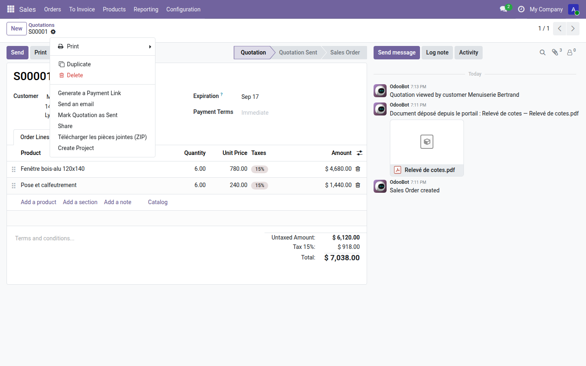
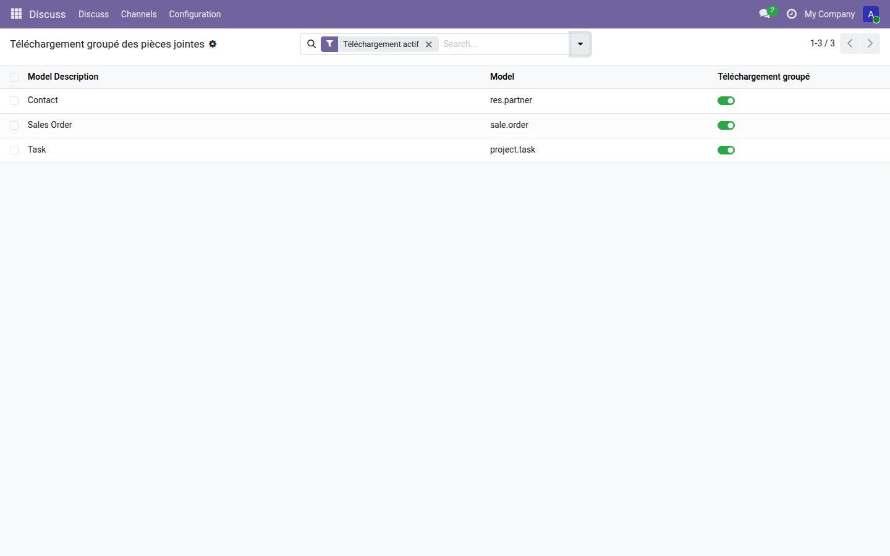

Tous les fichiers d'une fiche — ou de plusieurs — en un seul ZIP.
Odoo 19 sait zipper les fichiers d'un message du fil de discussion. Personne ne range ses documents ainsi : une commande porte le bon signé dans un message, le plan dans un autre, le relevé dans la boîte à pièces jointes. Les envoyer au bureau d'études demande alors autant de téléchargements que de fichiers, puis autant de pièces jointes dans le courriel.
L'entrée prend place dans le menu d'actions du devis, au milieu de celles d'Odoo. Un clic, un fichier.

Trois modèles activés ici : le devis, le contact et la tâche. Les modèles abstraits et les assistants ne sont pas proposés — ils n'ont pas de fiche, donc jamais de pièce jointe.

../../etc/passwd écrirait hors de son dossier chez qui décompresse l'archive.Sortir les fichiers est une chose, les ranger en est une autre. La gamme OdooSkills propose une gestion documentaire avec dossiers, étiquettes et droits, un nettoyeur de pièces orphelines, et le dépôt de documents par le client depuis son portail. Catalogue complet : apps.odooskills.com.
Licence LGPL-3 — compatible Odoo 19.0 Community et Enterprise. Support : support@odooskills.com.